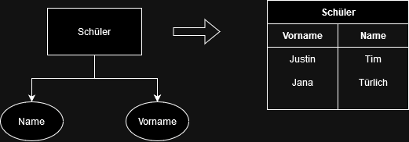
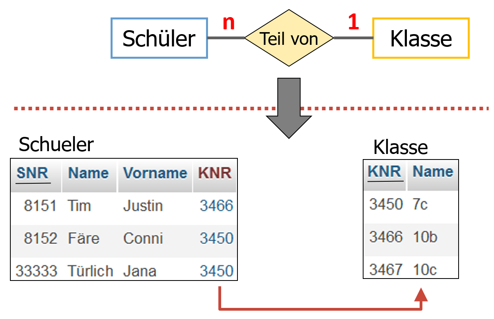
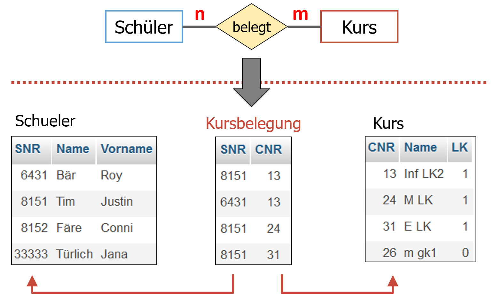

Verwendung von Schlüsseln (zur Identifikation von Datensätzen)
Die Verwendung der Schlüssel, um eine 1:n Beziehung darzustellen, haben wir bereits gelernt, jedoch gibt es natürlich noch mehr Möglichkeiten.
Deshalb hier erneut das gesamte Vorgehen einer Umwandlung eines ERD in ein Relationsschema mit den unterschiedlichen Beziehungsarten ergänzt.
Vorgehen:
- Man erstellt zu jeder Entität mit den Attributen das zugehörige Relationen-Schema in der oben angegebenen Form unter Kennzeichnung der Primärschlüssel 
- Man ergänzt für jede 1:1-Beziehung die beiden zugehörigen Relationen-Schemata um die jeweiligen ↑Fremdschlüsseln
- Man ergänzt für jede 1:n-Beziehung das zugehörige Relationen-Schema (n-Seite) um den ↑Fremdschlüssel

- Man erstellt zu jeder n:m-Beziehung ein neues Relationen-Schema unter Nutzung eines neuen Primärschlüssels und den beiden zugehörigen ↑Fremdschlüsseln
